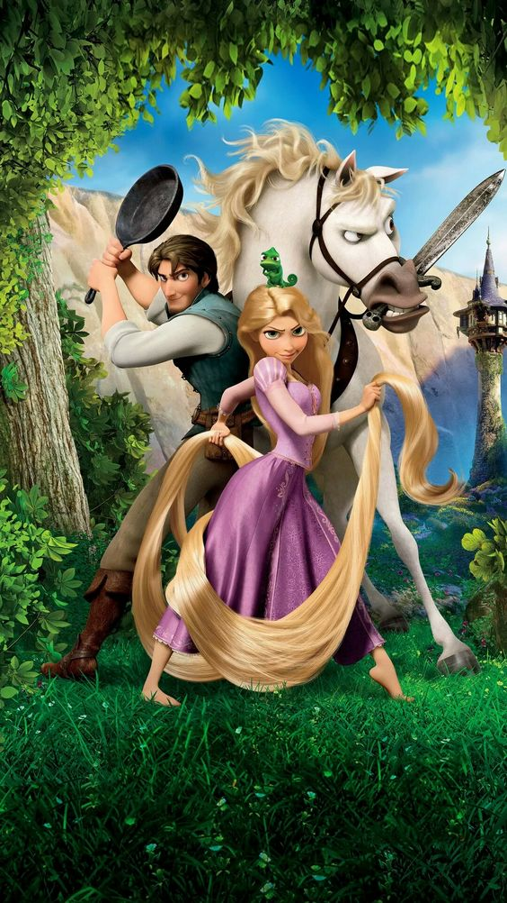
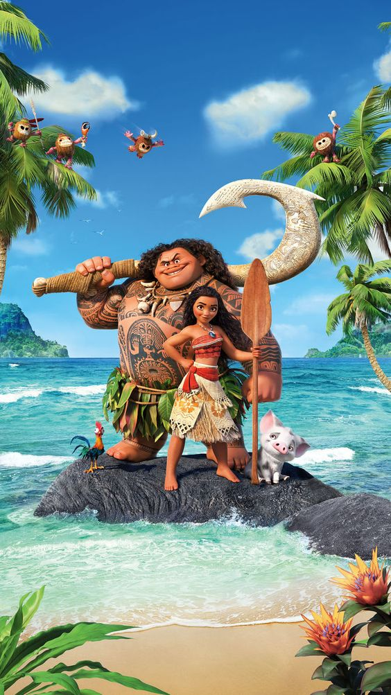

Disney Princess
Disney Princess, also called the Princess Line, is a media franchise and toy line owned by the Walt Disney Company. Created by Disney Consumer Products chairman Andy Mooney, the franchise features a lineup of female protagonists who have appeared in various Disney franchises. The franchise does not include all princess characters from the whole of Disney-owned media, but rather refers to select specific characters from the company's animated films, including only protagonists of animated films from Walt Disney Pictures, with twelve characters from the Walt Disney Animation Studios films and one character from a Pixar film. The thirteen characters in the franchise consist of Snow White, Cinderella, Aurora, Ariel, Belle, Jasmine, Pocahontas, Mulan, Tiana, Rapunzel, Merida, Moana, and Raya. The franchise has released dolls, sing-along videos, apparel, beauty products, home decor, toys, and a variety of other products featuring some of the Disney Princesses. Licensees for the franchise include Glidden (wall paint), Stride Rite (sparkly shoes), Fisher-Price (plastic figurines), Lego (Lego sets), Hasbro and Mattel (games and dolls).
Snow White

Snow White is a fictional character and a main character from Walt Disney Productions' first animated feature film Snow White and the Seven Dwarfs (1937). She was originally voiced by Adriana Caselotti. The character of Snow White was derived from a fairy tale known from many countries in Europe with the best-known version being the 1812 tale collected by the Brothers Grimm. Snow White is the first Disney Princess and the first fictional female character with a star on the Hollywood Walk of Fame.[3] Given the title the "Fairest One of All", she has continued to inspire similar traits in future Disney heroines, such as singing and communicating with animals. After Caselotti, she has also been voiced by Jane Powell, Ilene Woods, Dorothy Warenskjold, June Foray, Mary Kay Bergman, Carolyn Gardner, Melissa Disney, Katie Von Til, and Pamela Ribon, and portrayed live by Mary Jo Salerno (musical) and Stephanie Bennett (Descendants). Rachel Zegler will portray a live-action version of the character in the upcoming live-action adaptation of the original 1937 film.
Tangled
Tangled is a 2010 American 3D computer-animated musical adventure fantasy comedy film[2] produced by Walt Disney Animation Studios and released by Walt Disney Pictures. Loosely based on the German fairy tale Rapunzel in the collection of folktales published by the Brothers Grimm, it is the 50th Disney animated feature film. The film was directed by Nathan Greno and Byron Howard (in the former's feature directorial debut) and produced by Roy Conli, from a screenplay written by Dan Fogelman. Featuring the voices of Mandy Moore, Zachary Levi, and Donna Murphy, Tangled tells the story of Rapunzel, a lost young princess with magical long blonde hair who yearns to leave her secluded tower. She accepts the aid of an intruder to take her out into the world which she has never seen. Originally conceived and proposed by Disney animator Glen Keane in 2001, Tangled spent six years in production at a cost that has been estimated at $260 million, which, if accurate, would make it the most expensive animated feature film ever made and one of the most expensive films of all time. The film employed a unique artistic style by blending together features of computer-generated imagery (CGI) and traditional animation while using non-photorealistic rendering to create the impression of a painting. Composer Alan Menken, who had worked on prior Disney animated features, returned to score Tangled, and also wrote the film's songs with lyricist Glenn Slater. Before the film's release, its title was changed from Rapunzel to Tangled, reportedly to market the film gender-neutrally.
Moana
Moana Waialiki of Motunui is the title character of Walt Disney Animation Studios' 56th animated feature film Moana (2016). Created by directors Ron Clements and John Musker, Moana is voiced by Hawaiian actress and singer Auliʻi Cravalho. As a toddler, she is voiced by Louise Bush. Moana is set to appear in the Disney+ sequel series Moana: The Series, which will premiere in 2024. Inspired by Polynesian mythology, Moana is depicted as the strong-willed daughter of a chief of a Polynesian village, who is chosen by the ocean itself to reunite a mystical relic with the goddess Te Fiti. When a blight strikes her island, Moana sets sail in search of Maui (Dwayne Johnson), a legendary demigod, in the hope of returning the relic to Te Fiti and saving her people. Moana received widespread critical acclaim for her independence as well as Cravalho for her vocal performance. By 2019, Moana was officially inducted into the Disney Princess line-up, becoming the twelfth member.